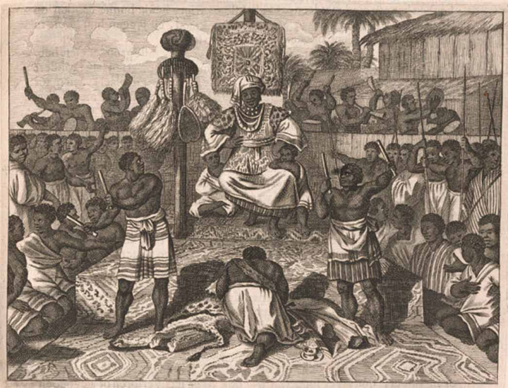

Before European arrival, the region was home to several powerful states, most notably the Kingdom of Kongo, which flourished from the 14th to the 19th centuries. The kingdom had an organized political system, advanced farming methods, and extensive trading networks.

In the late 19th century, the territory was claimed by King Leopold II of Belgium as his personal property, named the Congo Free State. This era was defined by brutal exploitation for rubber and ivory, resulting in severe human rights atrocities. In 1908, after international outcry, the Belgian government took control, establishing the Belgian Congo.
The people of the Congo fought hard for independence, which was officially achieved on June 30, 1960, with Patrice Lumumba serving as the first Prime Minister. However, political instability, cold-war intervention, and internal conflicts followed. Despite ongoing struggles for political stability and security, the Congolese people continue to fight for true self-determination, peace, and democratic governance.